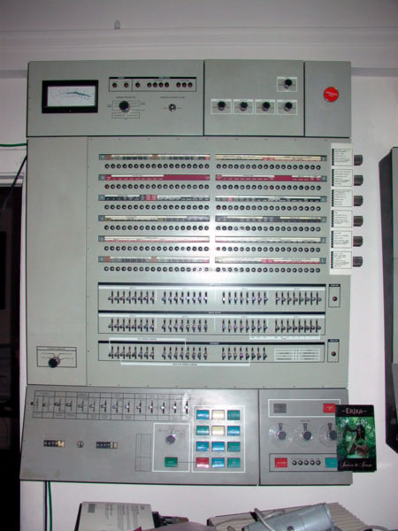

A terceira geração de computadores, com início em 1965, teve como evolução primordial a implementação de circuitos integrados.
O lançamento do primeiro Microprocessador, em 1971, marca o término desta geração e começo da próxima. Esses computadores eram utilizados circuitos integrados (IC's) em lugar de transistores. Um único IC tem vários transistores, resistores e capacitores junto com o circuitos associados. O IC foi inventado por Jack Kilby.
Um dos principais exemplos da terceira geração é o IBM 360/91, lançado em 1967, um grande sucesso em vendas na época. Essa máquina já trabalhava com dispositivos de entrada e saída modernos, como discos e fitas de armazenamento, além de poder imprimir todos os resultados em papel.
O IBM 360/91 foi um dos primeiros a permitir programação da CPU por microcódigo, então as operações usadas por um processador qualquer podiam ser gravadas através de softwares, sem a necessidade de projetar todo o circuito de forma manual.
No final desse período houve preocupação com a falta de qualidade no desenvolvimento de softwares, visto que grande parte das empresas estava focada em hardware.